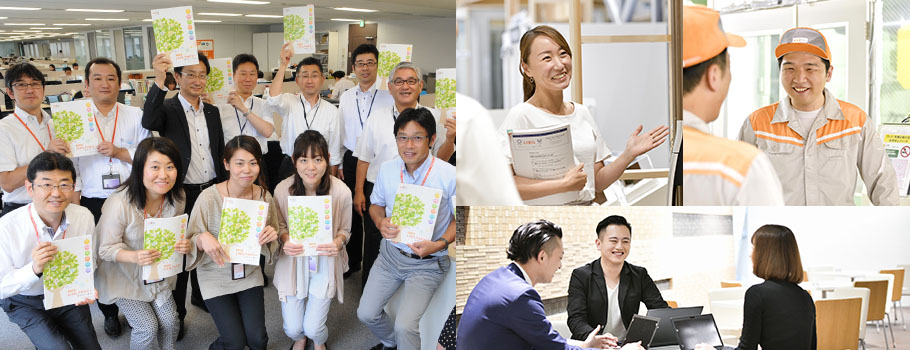

従業員とともに

現在、LIXILグループ全体では、7万人以上の従業員が世界中で働いています。うち、日本国内では約3万8千人、株式会社LIXIL単体の従業員は、約1万9千人となります。LIXILは、「2020年までに世界で最も企業価値が高く、革新的で、信頼されるリビングテクノロジー企業となる」というビジョンを掲げています。ビジョンを達成し、グローバル競争に勝ち続けていくためには、従業員の活力を増大させる人事基盤が必要と考えます。ビジョンの共有と達成に向け、「実力主義の徹底」、「多様性の尊重」、「公平な機会の提供」を尊重し実現する企業文化づくりを進めています。